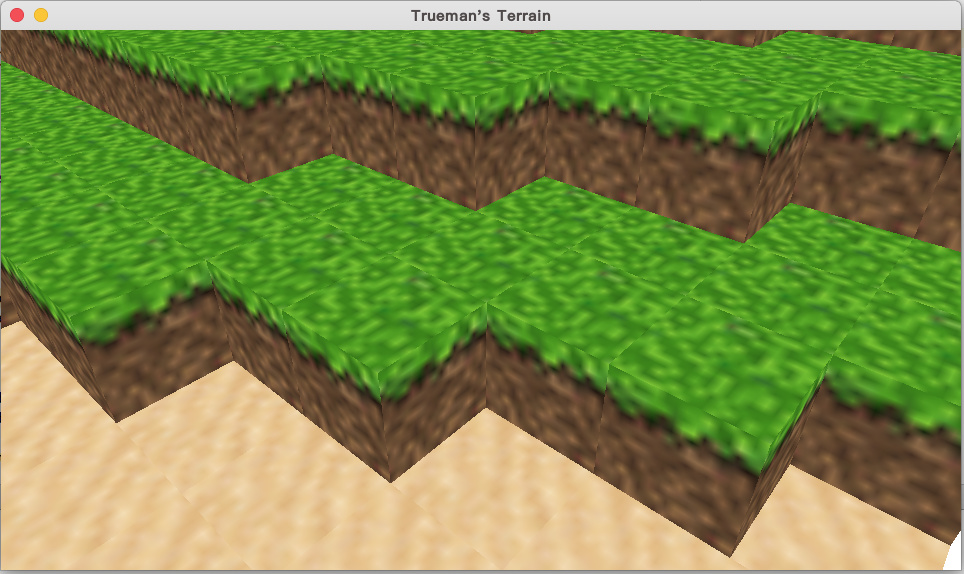
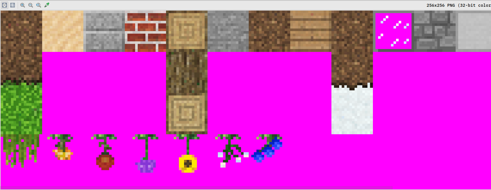

Hello , every one!
I I’ve succeeded in drawing chunks dynamic, but the texture is fuzzy.
Look this:

This is original texture:

Here are simple Material , Technique and a Shader.
GrassMaterial:
<material>
<technique name="Techniques/GrassTech.xml" />
<texture unit="diffuse" name="Textures/texture.png" />
</material>
GrassTech:
<technique vs="GrassSL" ps="GrassSL" psdefines="DIFFMAP" >
<pass name="base" />
<pass name="prepass" psdefines="PREPASS" />
<pass name="material" />
</technique>
GrassSL:
#include "Uniforms.glsl"
#include "Samplers.glsl"
#include "Transform.glsl"
#include "ScreenPos.glsl"
#include "Fog.glsl"
varying vec2 vTexCoord;
varying vec4 vWorldPos;
#ifdef VERTEXCOLOR
varying vec4 vColor;
#endif
void VS()
{
mat4 modelMatrix = iModelMatrix;
vec3 worldPos = GetWorldPos(modelMatrix);
gl_Position = GetClipPos(worldPos);
vTexCoord = GetTexCoord(iTexCoord);
vWorldPos = vec4(worldPos, GetDepth(gl_Position));
#ifdef VERTEXCOLOR
vColor = iColor;
#endif
}
void PS()
{
// Get material diffuse albedo
#ifdef DIFFMAP
vec4 diffColor = cMatDiffColor * texture2D(sDiffMap, vTexCoord);
#ifdef ALPHAMASK
if (diffColor.a < 0.5)
discard;
#endif
#else
vec4 diffColor = cMatDiffColor;
#endif
#ifdef VERTEXCOLOR
diffColor *= vColor;
#endif
// Get fog factor
#ifdef HEIGHTFOG
float fogFactor = GetHeightFogFactor(vWorldPos.w, vWorldPos.y);
#else
float fogFactor = GetFogFactor(vWorldPos.w);
#endif
#if defined(PREPASS)
// Fill light pre-pass G-Buffer
gl_FragData[0] = vec4(0.5, 0.5, 0.5, 1.0);
gl_FragData[1] = vec4(EncodeDepth(vWorldPos.w), 0.0);
#elif defined(DEFERRED)
gl_FragData[0] = vec4(GetFog(diffColor.rgb, fogFactor), diffColor.a);
gl_FragData[1] = vec4(0.0, 0.0, 0.0, 0.0);
gl_FragData[2] = vec4(0.5, 0.5, 0.5, 1.0);
gl_FragData[3] = vec4(EncodeDepth(vWorldPos.w), 0.0);
#else
gl_FragColor = vec4(GetFog(diffColor.rgb, fogFactor), diffColor.a);
#endif
}
so, I have two question:
-
How to show original texture on cube?
-
As you can see, there is no shadow now , I want to calculate it manually, have not use Urho3D’s Light.
that’s like i calculate a value " shadowValue " (0< shadowValue < 1),
now I want to do this:vec4 diffColor = cMatDiffColor * texture2D(sDiffMap, vTexCoord) * shadowValue ;
is that right?
If OK, how I pass the shdowValue to Shader?